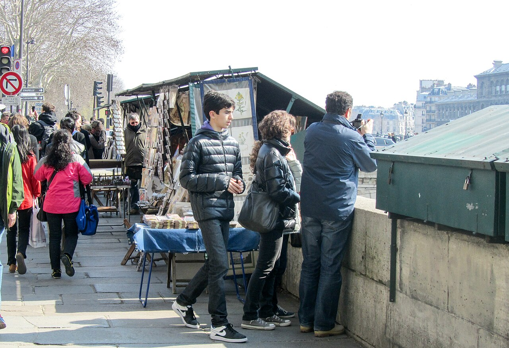
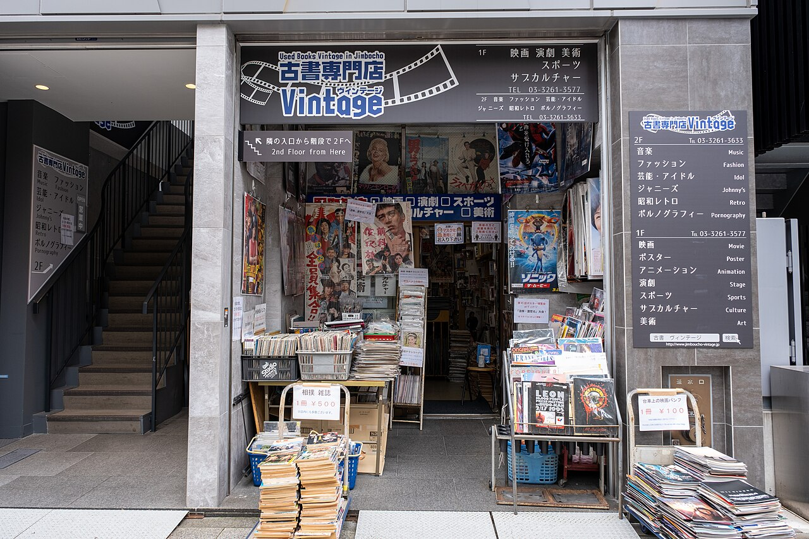

売り場は3つの階。甲板は外の風の中、客室はじゅうたんの和室と椅子席、車両甲板には移動書店のトラックが入ります。
写真は神田古本まつり（2019年）、パリのセーヌ河岸、神保町の古本屋。古本市の人の流れはこんな感じです。みそがい（CC BY-SA 4.0）／Thirunavukkarasye-Raveendran（CC BY-SA 4.0）／Real Estate Japan（CC BY 2.0）、Wikimedia Commons